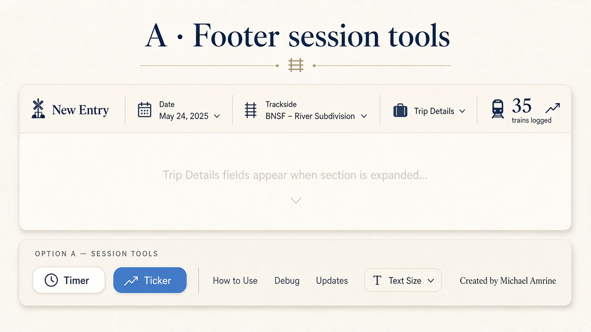
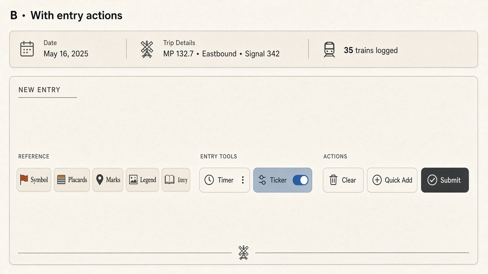
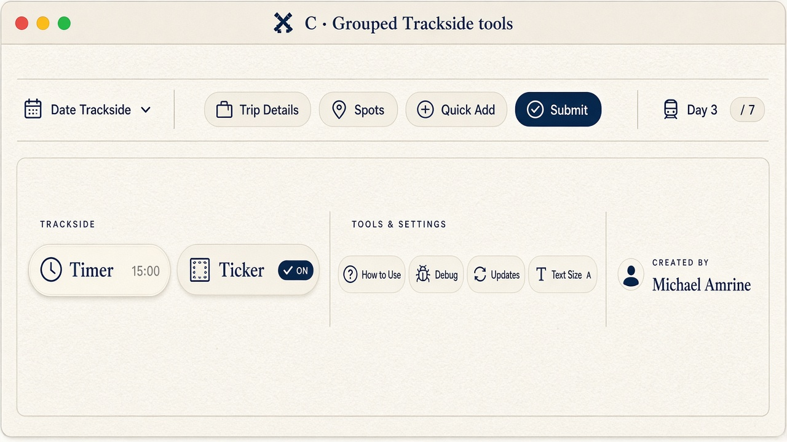

A · Page footer
Session bar stays clean (date, Trip Details, day count, Spots / Submit). Timer + Ticker sit in page-foot with How to Use.

Wireframe · matches current chrome
35 trains logged
Created by Michael Amrine
Pros: frees the session bar on Mac + phone. Cons: Timer is farther from the form while logging.
B · Entry actions
Timer + Ticker live under the card with the reference chips and Submit — natural “tools while logging” zone (especially on tablet).

Wireframe · entry-actions-row
35 trains logged
Pros: closest to the pad while working. Cons: that row is already busy on narrow phones; Mac currently hides the bottom actions strip.
C · Trackside group in page footer
Same footer as A, but a labeled Trackside cluster so Timer/Ticker read as session tools, not docs links. Timer can show the running countdown.

Wireframe · grouped page-foot
35 trains logged
Trackside
Created by Michael Amrine
Pros: clearest grouping; room to show timer digits. Cons: still a reach from the top of a long form.